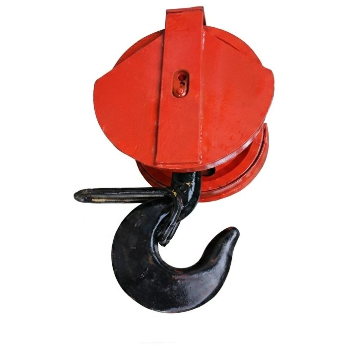
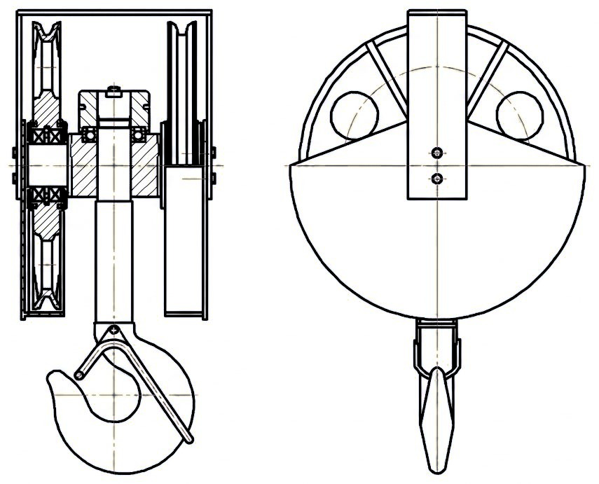
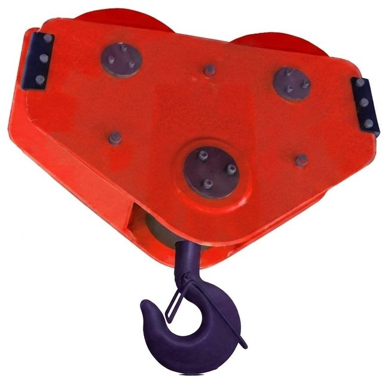
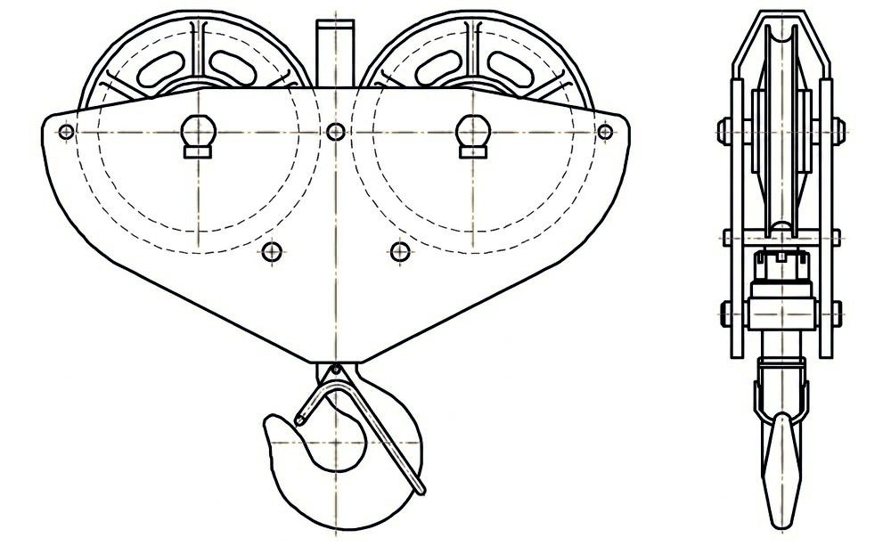
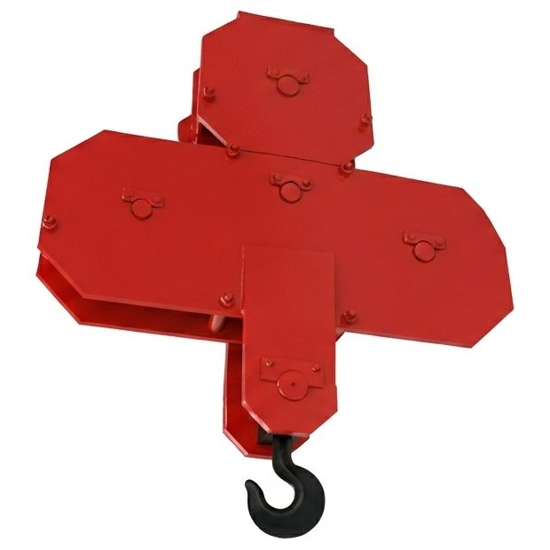
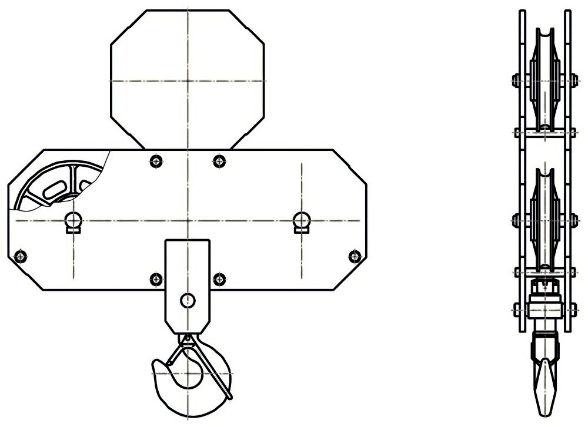

Позвонить: (4842) 75-75-05
Написать сообщение: m-40@inbox.ru
Крюки и крюковые подвески → Крюковые подвески

Одним из основных элементов крана является подвеска крюковая, которая служит для подвешивания груза на грузовой канат крана.
Подвеска крановая или крюковая подвеска состоит из подвижных обводных блоков и крюка грузового, объединённых между собой
траверсой и щеками.
Конструкция крюковой подвески зависит от числа ветвей каната, числа и относительного расположения блоков,
типа крюка и т.п.
Конструктивно крюковая подвеска состоит из кранового крюка, шарнирно закрепленного между щеками подвески с помощью
траверсы и блоков, опирающихся на неподвижно закрепленную ось.
Хвостовик крюка проходит сквозь отверстие в траверсе и закрепляется гайкой, опирающейся либо на сферическою шайбу при грузоподъемности до 3,2т, либо на упорный
шарикоподшипник при большей грузоподъемности.
Подшипники должны быть обеспечены смазкой и защищены от попадания грязи. Упорные подшипники по
статической грузоподъемности выбираются по расчетной нагрузке, превышающей вес поминального груза на 25%.
Чтобы не произошло самопроизвольного отвинчивания гайки,
она должна быть законтрена стопорной планкой. Стопорение гаек крюков грузоподъемностью до 10т вследствие малых размеров гайки разрешается производить с помощью
штифтов или стопорных болтов. Использование шплинтов недопустимо во всех случаях.
Массу крюковых подвесок, при проектировании, подбирают так, чтобы они опускались без груза на крюке под действием собственной
силы тяжести, вытягивая грузовой канат, на котором они подвешены.
По размеру и расположению блоков различают два типа крюковых подвесок:
- Нормальные;
- Укороченные.
В нормальных подвесках траверса, на которой укреплен крюк, соединяется с осью канатных блоков щеками, изготовленными из листовой или полосовой стали.
Траверса имеет на концах стопорные накладки, препятствующие ее осевому перемещению, позволяющие ей поворачиваться вместе с крюком относительно горизонтальной оси.

|

|
Рисунок 1. Внешний вид и чертеж крюковой подвески нормальной
Укороченная подвеска меет меньший размер по высоте, благодаря чему груз можно поднять на несколько большую высоту по сравнению с нормальной подвеской.
Укороченную подвеску применяют только при чётной кратности полиспаста.
В укороченных подвесках блоки полиспаста размещаются на удлиненных цапфах траверсы. Укороченная крюковая подвеска позволяет осуществить подъем груза на несколько
большую высоту, но ее можно применять только при четной кратности полиспаста.
Траверса изготовляется из сталей 10 или 45.

|
 |
Рисунок 2. Внешний вид и чертеж крюковой подвески укороченной
Для предохранения от выскакивания каната ручьи блоков крюковой подвески (а также головных блоков стрел кранов) защищены кожухом, изготовленным из листовой стали толщиной не менее 3мм.
Основные типоразмеры подвесок крюковых
| Тип подвески | Г/п | Крюк | Диаметр каната |
Диаметр блока |
Количество блоков |
| т | мм | мм | шт. | ||
| ПК-3,2-12А-1-400-14 | 3,2 | 12А-2 | 14 | 400 | 1 |
| ПК-3,2-12А-1-500-14 | 3,2 | 12А-2 | 14 | 500 | 1 |
| ПК-5,0-14А-1-400-14 | 5 | 14А-2 | 14 | 400 | 1 |
| ПК-5,0-14А-1-500-16,5 | 5 | 14А-2 | 16,5 | 500 | 1 |
| ПК-5,0-14А-2-400-14 | 5 | 14А-2 | 14 | 400 | 2 |
| ПК-5,0-14А-2-500-16,5 | 5 | 14А-2 | 16,5 | 500 | 2 |
| ПК-10,0-17А-2-500-16,5 | 10 | 17А-1 | 16,5 | 500 | 2 |
| ПК-10,0-17А-2-630-18 | 10 | 17А-1 | 18 | 630 | 2 |
| ПК-10,0-17А-3-400-14 | 10 | 17Б-1 | 14,5 | 400 | 3 |
| ПК-10,0-17А-3-500-16,5 | 10 | 17А-1 | 16,5 | 500 | 3 |
| ПК-12,5-17А-3-400-16,5 | 12,5 | 17А-1 | 16,5 | 400 | 3 |
| ПК-12,5-18А-3-500-16,5 | 12,5 | 18А-1 | 16,5 | 500 | 3 |
| ПК-12,5-18А-3-630-18 | 12,5 | 18А-1 | 18 | 630 | 3 |
| ПК-16-18А-3-400-16,5 | 16 | 18А-1 | 16,5 | 400 | 3 |
| ПК-16-18А-3-500-16,5 | 16 | 18А-1 | 16,5 | 500 | 3 |
| ПК-16-18А-3-630-18 | 16 | 18А-1 | 18 | 630 | 3 |
| ПК-16-19А-4-400-16,5 | 16 | 19А-1 | 16,5 | 400 | 4 |
| ПК-16-19А-4-500-16,5 | 16 | 19А-1 | 16,5 | 500 | 4 |
| ПК-16-19А-4-630-18 | 16 | 19А-1 | 18 | 630 | 4 |
| ПК-20-19А-4-400-16,5 | 20 | 19А-1 | 16,5 | 400 | 4 |
| ПК-20-19А-4-500-16,5 | 20 | 19А-1 | 16,5 | 500 | 4 |
| ПК-20-20А-4-630-18 | 20 | 20А-1 | 18 | 630 | 4 |
| ПК-32-20А-4-700-22 | 32 | 20А-1 | 22 | 710 | 4 |
| ПК-32-22А-4-800-22 | 32 | 22А-1 | 22 | 810 | 4 |
| ПК-50-24А-5-800-28 | 50 | 24А-1 | 28 | 810 | 5 |
| ПК-50-24А-5-900-28 | 50 | 24А-1 | 28 | 960 | 5 |
По количеству осей, на которых находятся канатные блоки, различают крюковые подвески:
- Одноосные;
- Двухосные;
- Трехосные.
|
 |
 |
Рисунок 3. Внешний вид и чертеж крюковой подвески двухосной
Одно- и двухосные подвески применяются на кранах с двухниточной запасовкой грузового каната. Для большей грузоподъемности при четырехниточной
запасовке устанавливают трехосные подвески. Двух- и трёхосные подвески чаще всего применяют на башенных кранах.
Двухосная крюковая подвеска состоит из двух листовых щёк, двух осей, на
которых на шарикоподшипниках установлены блоки, траверсы и пропущенного через неё крюка. Щёки стянуты между собой болтами с распорными трубками. Крюк
опирается на траверсу через упорный шарикоподшипник и может вращаться относительно траверсы и щёк подвески.
Такое крепление позволяет разворачивать поднятый груз вокруг вертикальной оси подвески. Подшипник крюка закрыт от грязи и влаги крышкой и резиновыми
уплотнителями. На крюке установлен предохранительный замок, который при работе препятствует произвольному выходу серьги съёмного грузозахватного
приспособления из зева крюка.
|
 |
 |